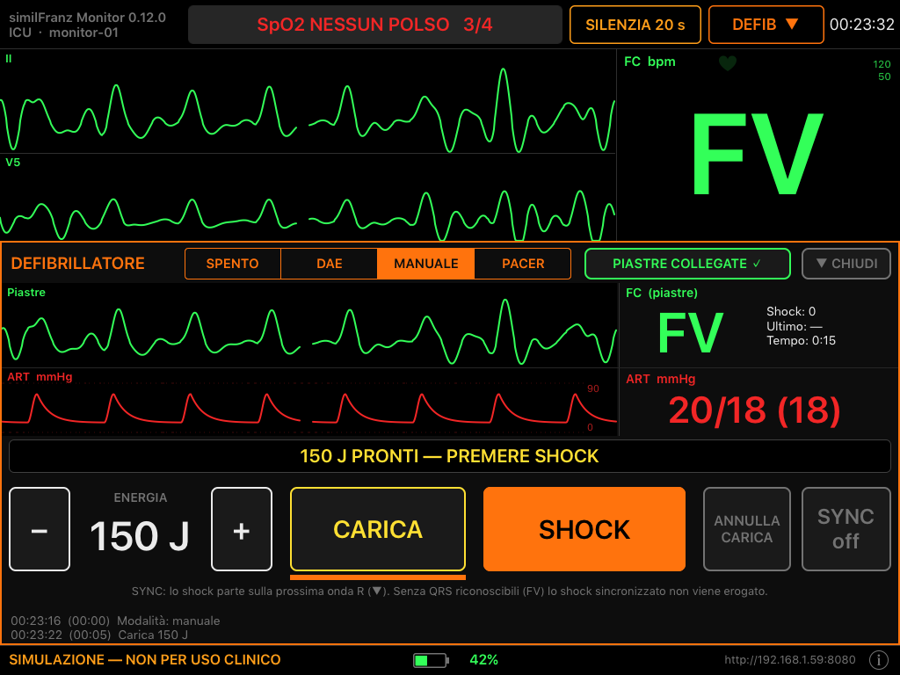
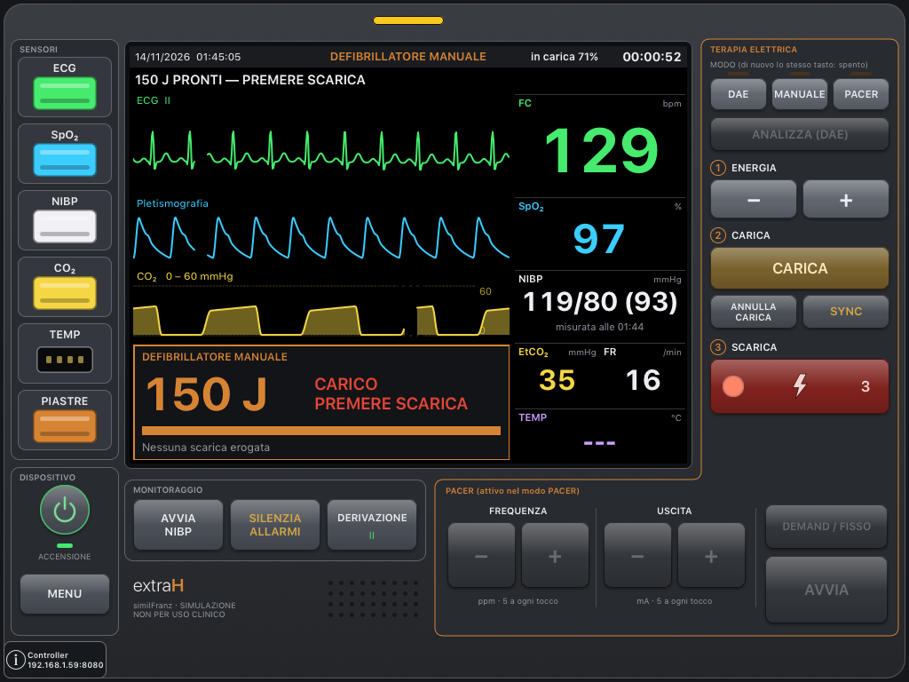

Il monitor
Si comporta come quello vero, anche quando qualcosa va storto.
La NIBP si gonfia e misura, gli allarmi suonano con la loro priorità, in arresto la saturazione sparisce e l'EtCO₂ crolla. Il defibrillatore carica, scarica, sincronizza e fa pacing: che cosa succede dopo, lo decide l'istruttore.



I tre layout sono disegnati per questo progetto: non riproducono nessun dispositivo in commercio. Il sistema è aperto, e un frontale diverso per le esigenze formative del tuo centro si può scrivere partendo da uno di questi.